薬師寺
| 日付 | 2020年1月2日（木） |
|---|---|
| メンバー | 家族（妻、長女・8歳、長男・6歳、両親、姉一家） |
| アクセス | 車 |
今年の初詣は薬師寺に行くことにする。
2010年に訪れたときは東塔が解体修理中で見ることができなかった。
10年後の今年、薬師寺の修理がついに完成したとのことで、
10年前の溜飲を下げるため、再訪することにする。
駐車場から松並木の参道を歩いて薬師寺を目指す。
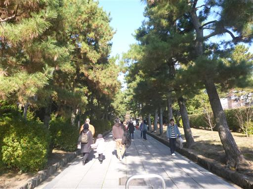
しばらく歩くと薬師寺が見えてくるが、南門は修理中で見栄えが悪い。
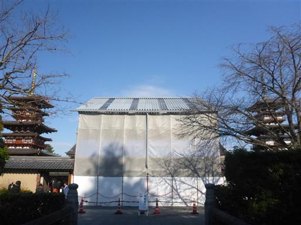
薬師寺と記載された石碑。
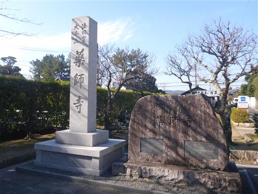
手水舎。六根清浄と書かれている。
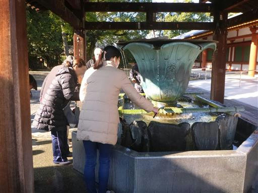
中門をくぐって中に入る。両脇は二天王像だ。
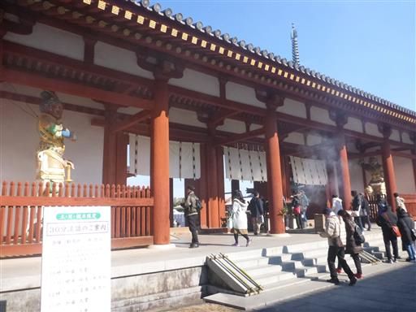
目の前に聳える金堂。1976年再建の比較的新しい建物だが、
中に安置されている薬師三尊像は奈良時代に作成された国宝だ。
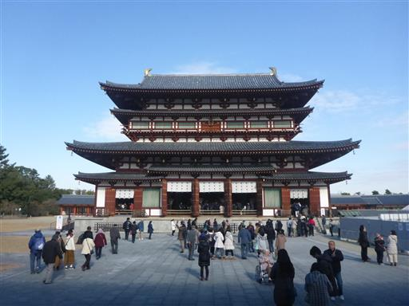
そして東塔。ついにその姿を拝むことができた。三重塔の珍しい形の塔だ。
残念ながら足元はまだバリケードがあって近づくことができない。
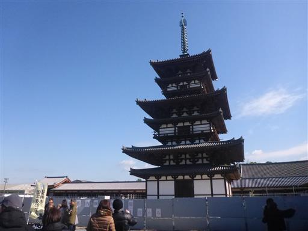
西塔。これも1981年の再建だ。東塔とはだいぶ色合いが異なる。
中に入ることができ、釈迦の生涯を現したレリーフがある。
塔の内部構造を見たかったのだが、レリーフが非常に大きく
残念ながら心柱がわずかに見えただけだった。
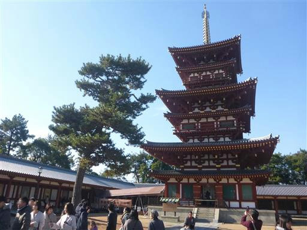
大講堂、食堂を見学。
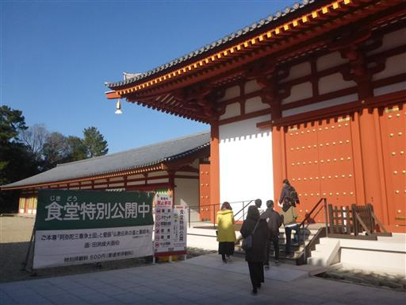
鐘楼。残念ながら鐘を突くことはできない。
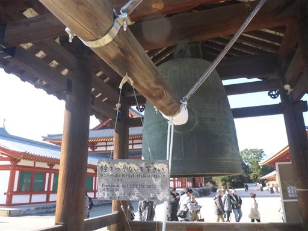
最後に薬師寺に隣接している孫太郎稲荷神社に寄り道してお参りする。

サンプーペーという名のイタリアンの店で昼食をとって帰宅する。
薬師寺の説法は面白いのでゆっくり聞きたかったが、
子連れではそうもいかず、少々急ぎ足の参拝になったのが残念だった。
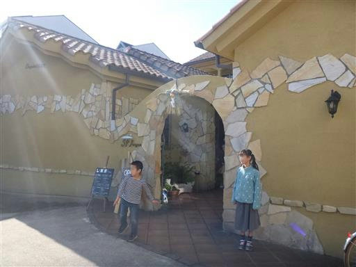
他の記録